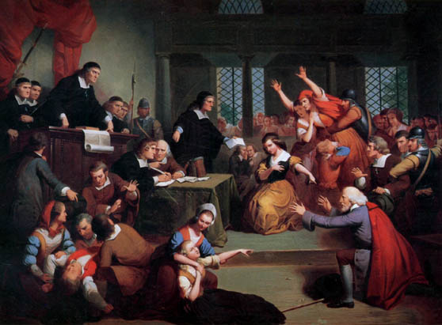

George Jacobs, Sr.

| The painting depicts the trial of George Jacobs, Sr. at the
Court of Oyer and Terminer in Salem. The scene is an imaginary one,
as no records of the actual trial exist, and it its not known who
was present at Jacobs' trial on August 5th. The inspiration for the
painting comes from two moving documents written by 17year-old
Margaret Jacobs: "Margaret Jacobs to her Father" and "Recantation
of Margaret Jacobs." See
Salem Witchcraft Papers Volume 2, Case 24 In addition to the officials of the court, Matteson portrays several members of the George Jacobs family who became caught up in the witchcraft accusations in Salem Village. Kneeling in the foreground is the white haired, 72 year-old George Jacobs, Sr., wearing an expensive red cape, with his walking stick lying next to him on the floor. At the center of the picture, pointing her finger directly at Jacobs, is his granddaughter Margaret Jacobs. Urged to confess to witchcraft to save her life, she accused her grandfather among others who had already been accused. The distraught figure lunging towards Margaret is her mother Rebecca Jacobs, who was said to have been mentally deranged at the time. She, too, was accused of witchcraft. Standing next to George Jacobs, Sr. is his son, George Jacobs, Jr., whom Matteson shows responding in horror to his daughter's accusation of her grandfather. In the foreground, Matteson places a young man and a girl suffering from "fits," caused by George Jacobs senior's invisible "specter." The girl is possibly Sarah Churchill, Jacobs' household servant, or perhaps Ann Putnam, both of whom repeatedly testified that Jacobs' specter attacked them. The black robed magistrates are shown at the bench, with the chief magistrate, William Stoughton, towing over the commotion caused by Margaret's accusation of her grandfather. One of the magistrates, perhaps John Hathorne, who often took the lead role in interrogating the accused in court, holds a written document, in front of the young Margaret Jacobs. This document may be intended to represent Margaret's written confession in which she accuses her grandfather. Judge Hathorne gestures towards the clerk of the court, Stephen Sewall, who is shown writing down Margaret's testimony at the clerk's table, with the other court records lying in front of him . In the background against the windows Matteson shows a group of people who may represent the grand jury. The artist also depicts the large crowd of onlookers that typically attended the trials in Salem. |